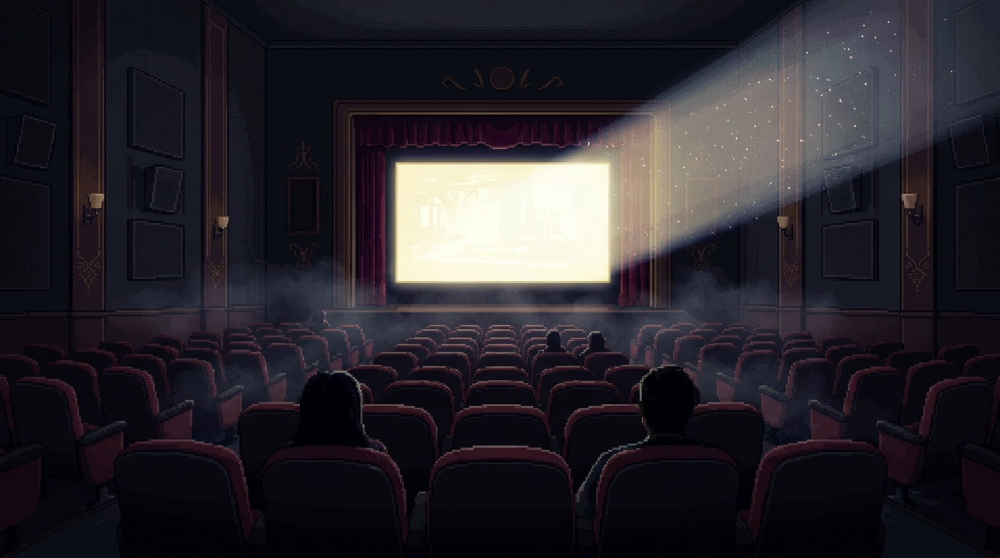
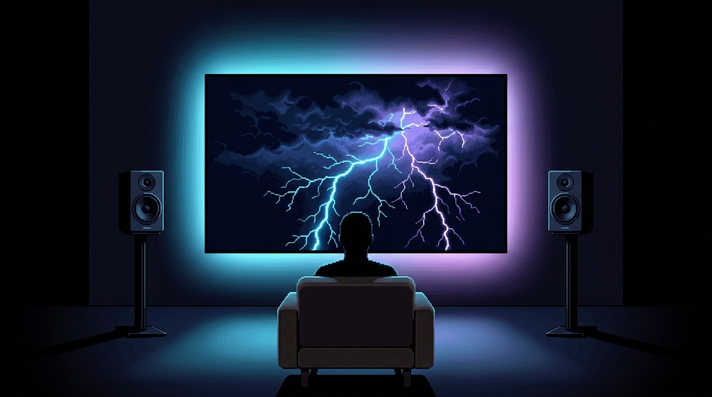
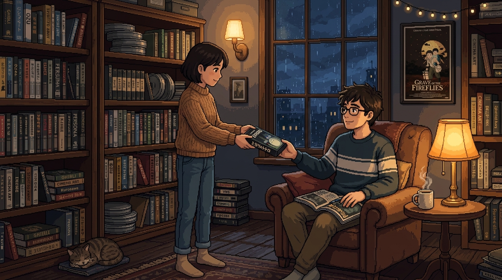
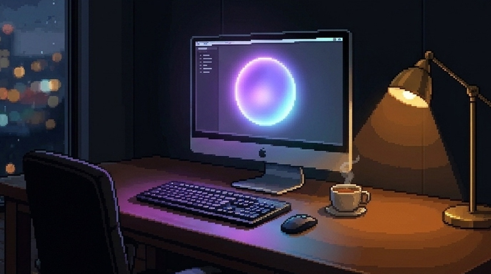
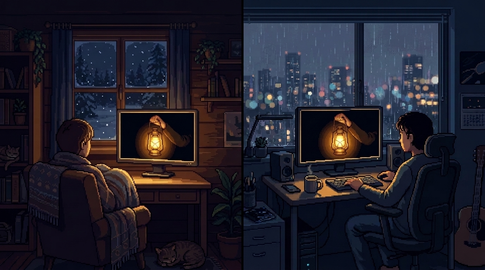
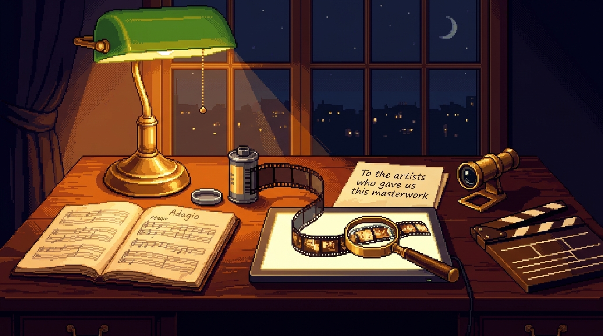
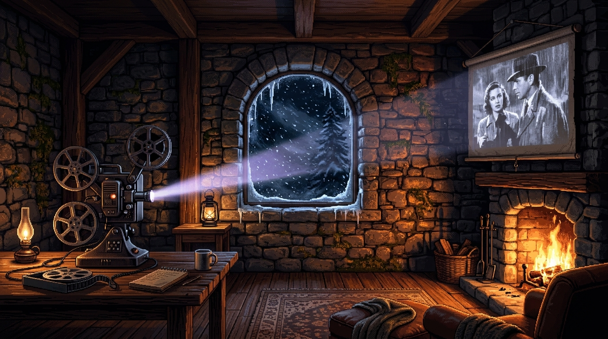

A Sanctuary for Cinema
Built for those who value the beauty of film, the dignity of craftsmanship, and the quiet room shared among friends.
We built Orbie out of a profound love for cinema, guided by the conviction that a great film remains one of the most transformative emotional experiences human beings have ever created.
When the lights fade and the projector beam strikes the canvas, the entire outside world recedes, allowing you to live completely within another human being’s perspective, feeling what they feel, perceiving the world through their senses, and finding words for grief you never understood or a dream you carry for thirty years. That shared stillness is sacred, demanding an atmosphere of quiet, presence, and undivided care.

The Sensory Shock
Commercial streaming platforms systematically degraded that wonder, reducing a century of artistic devotion into frictionless background noise by crushing the image and flattening dynamic range to trim corporate bandwidth costs.
When you experience a film uncompromised in its master state, the revelation strikes your senses with immediate physical weight. Colors arrive with visceral richness and warmth, accompanied by deep, velvety shadows where you can distinguish the intricate weave of a wool coat or the faint glint of moisture in low light, preserving the exact golden dusk Gordon Willis labored to photograph on The Godfather. Film grain breathes naturally across the frame with organic vitality, holding your focus so entirely that the impulse to check a phone or glance away simply evaporates.
As the story unfolds, the rigid geometry of the computer screen softly dissolves, because just as light bouncing from a theater canvas naturally washes across the surrounding walls, Orbie lets the atmosphere of the scene spill past the edge of the glass, bathing your room in electric cyan during a lightning strike or warming the shadows with the amber glow of stage footlights.
Sound brings an even deeper sensory awakening, moving with genuine dynamic breath so that intimate dialogue feels dry, close, and whispered directly at your ear, before an orchestral swell or seismic engine rumble physically displaces the air in the room, tightening your chest and pulling your pulse into the rhythm of the cut.

The Intuition of a Friend
Finding a film ought to feel like talking with someone who genuinely understands your taste, rather than confronting the familiar exhaustion of clicking through endless commercial tiles pushed by corporate engagement metrics until you give up in frustration and turn the television off.
Orbie behaves like a trusted friend who knows what captivates your imagination, reaching over to pull a single title from the shelf and handing it to you with the quiet certainty that it will stay with you long after the final cut, allowing you to settle into the evening calm and ready to enter the story.

The Back of the Cabinet
We believe software should be built with the same moral devotion that guided the craftspeople who made the art it presents, an ethos Steve Jobs articulated through the discipline of fine carpentry:
That devotion governs every layer of Orbie, where the machinery recedes so entirely that the screen transforms into pure glass, motion glides with the fluid ease of running water, and the pristine master copy begins instantly with the precise color grading and acoustic mastering envisioned in the mixing suite.
Because craftsmanship also means honoring the viewer, the software treats your private life with absolute dignity, ensuring that whatever moves you to tears in the middle of the night remains solely on your personal drive, immune to remote surveillance, data harvesting, or behavioral profiling.

The Private Screening Room
Historically, the greatest film experiences occurred within private screening rooms, where dedicated directors and cinephiles gathered a handful of close companions behind heavy soundproof doors, dimming the sconces to share the spell of an uncompressed master reel in complete intimacy.
Orbie recreates that sanctuary digitally across any geographic distance, keeping playback synchronized to the exact millisecond so that when an orchestral melody drops to a whisper or the image abruptly cuts to black, everyone in your circle holds their breath together in genuine communion, restoring the warmth of a late-night private screening among the people you trust most.

What We Owe the Filmmakers
Access to art without respect for its creators remains hollow, a truth illuminated by Jony Ive when describing the profound human connection embedded within genuine care:
Producing a masterwork demands immense personal sacrifice, requiring hundreds of dedicated artists to stand in the freezing mud at dawn, carpenters to construct authentic sets by hand, focus pullers to track moving actors with microscopic precision, composers to spend sleepless months discovering an essential melody, and editors to debate the pacing of a single cut.
While streaming monopolies extract billions while distributing microscopic fractions of a penny to the artists who made the work, we believe viewers who are shaken to their core should have a direct channel of gratitude, enabling you to send support straight to the composer whose score haunts your thoughts, help finance an independent director’s next production, or contribute to archival film preservation crews, transforming the audience from passive consumers into real patrons of cinema.

The Hearth and the Closed Door
Because trust cannot be mass-produced, Orbie remains permanently invite-only, deliberately foregoing public registration and promotional marketing in order to protect the quiet intimacy of the room. When digital platforms expand indiscriminately, the noise inevitably drowns out the stillness, crowding the benches and eroding the mutual care required for a true sanctuary to endure.
Every invitation token carries the enduring reputation of the member who granted it, binding personal honor to collective conduct.
In the depth of winter, a warm hearth requires solid stone walls, because throwing the heavy door wide open to the howling gale outside merely extinguishes the fire for everyone gathered around it, whereas keeping the sanctuary quiet and protected ensures that the light on the screen remains pure for those who cherish cinema enough to guard it.
